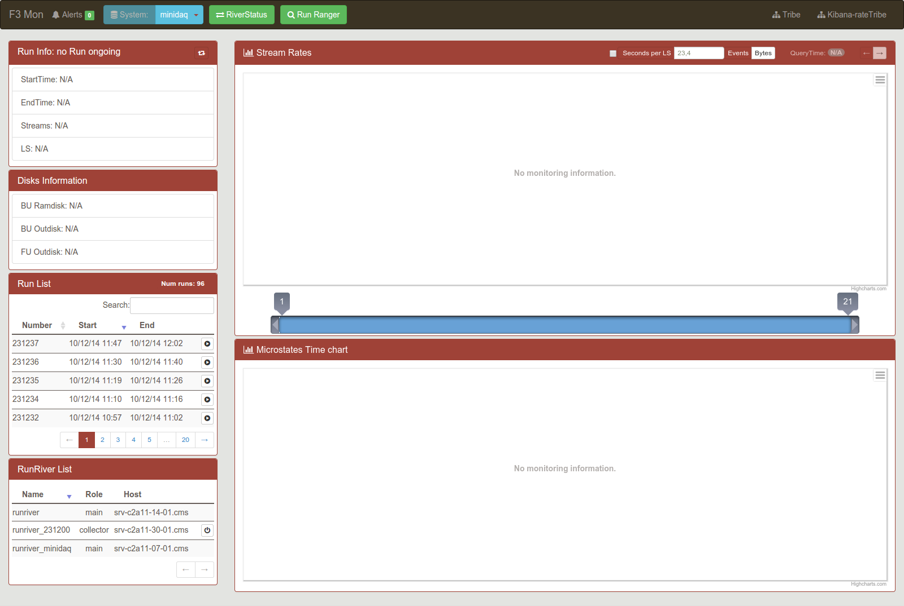
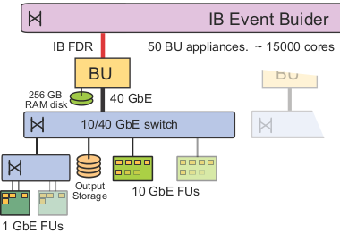

The F3 Monitor Page
This guide will introduce you to the comprehension of the F3 monitor page.
But first a step behind.
CMS DAQ Upgrade (DAQ2)

This is the CMS DAQ Upgrade. You should already know it.
So We can now focus on the part where the F3 Monitor data are generated.
The HLT sub-farms.
The HLT sub-farms
When data flows throught the BU-FU appliance,the processes involved generate json file with information about the merging.
Each PC involved contains an ElasticSearch server who collect this json files.
We have a set of server for each BU-FU appliance wich forms an ES Cluster.
So We have an ES cluster for each appliance.
So We have an ES cluster for each appliance.
The ES Tribe
To connect all this ES cluster togheter there are some special ES server called tribe node.
Basically setting up a ES Tribe.
In this way, each query performed on a tribe node will be propagated over all the BU-FU clusters.
In this way, each query performed on a tribe node will be propagated over all the BU-FU clusters.
But we dont want to stress the BU-FU servers with query coming from the Web Interface requests.
Also, we want to collect the clusters data providing global informations.
Also, we want to collect the clusters data providing global informations.
The ES-CDAQ cluster
So, on top of this we create another ES cluster, called es-cdaq.
To collect data from the es-tribe and put them in the es-cdaq there is an ES resident software called RunRiver Plugin.
The RunRiver plugin is composed in two part:
- A RunRanger (role:main) who check when a new run starts
- A Collector (role:collector) for each run ongoing who collect the data (triggered by the RunRanger)
Now we can focus on the F3 web page.
Let's see all its components , one by one.
That's all for now
Have fun!